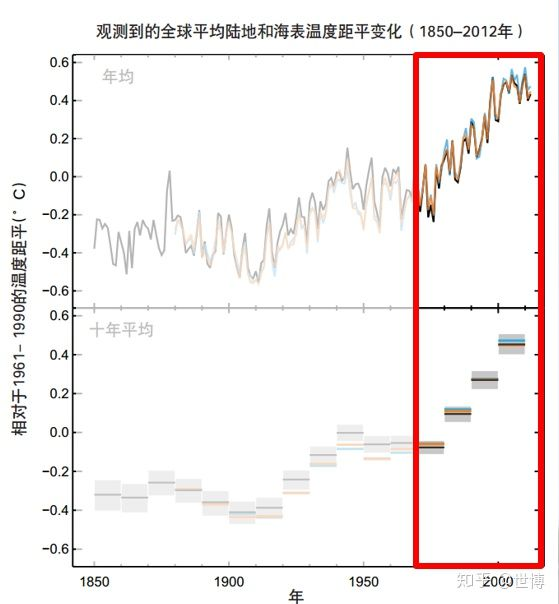

首先，我认为，“全球变暖”这个话题，或者说概念不适合向年纪过小的孩子做科普。说实话，我从事大气科学方向的学习也有些年头了，对于这个概念我还把握不好，别说不从事这个方向学习的成人，更不要提知识面更窄的孩子们了。前面有从事教育工作的回答的很好，说给孩子种下个科学的种子，可能会收货无穷的结果。这句话说得非常好，但是我觉得“全球变暖”这个抽象又复杂的概念不适合当成“种子”，如果想种大气科学方面的种子，我觉得更直观的各种中小尺度天气现象（雷暴，强对流云团）更为合适。孩子们如果能直接看到这种异常壮观的景象，势必会留下深刻的印象而产生兴趣。这个时候，如果孩子问成因之类的东西，如果懂就简单说一下，如果不懂也不要强行解释，个人认为“爸爸/妈妈也不知道这个神奇的现象是怎么回事，我们一起看看纪录片是怎么说的吧（或者，我们一起去图书馆找找，看看书里是怎么说的）”这样效果要更好。如果不懂装懂，强行给孩子解释，不准确甚至是错误的解释可能会影响孩子以后再这方面的学习。关键的不是解决“什么是XXX”，而是在于让孩子们对于“什么是XXX”产生浓厚的兴趣。正所谓，兴趣是最好的老师，只要有了兴趣，你不教，他们也会学得很好，这就解释了，为啥有些小孩子打“王者农药”比成年人打的好（我就打的稀烂）~~~然后，我想说下“科普”工作。其实这个工作超级复杂，从某个程度上讲，其难度甚至高于讲授大学教程。因为大学教程是讲给有一定基础的学生，可以使用公式，专业术语以简化讲述过程。而科普则面向几乎无基础的听众讲述，不能使用专业术语。这就要求讲述人十分了解，甚至是有独到见解，并且有十分出色的表达能力，才能做很好的科普工作。否则就像“科技袁人”的袁岚峰老师说的，一种把科普做成了谁都听不懂“有科没普”的大学课程，另一种就是“有普没科”的幼儿园教程。
接下来，我想面向具有高中知识水平的听众阐述下我所理解的“全球变暖”。如果听众想向孩子解释全球变暖，可以先看懂我解释的全球变暖，再自行选择合适的方式向孩子解释。我能做的只是尽量保证，你向孩子解释的时候不是“以其昏昏”。至于用如何使用生动形象的语言，这一点我实在是无能为力啦，嘻嘻。你们自己想办法吧~~哈哈哈~~~~
简单一句话，全球变暖是指全球地表平均气温逐年升高。全球变暖是一个气候概念，并不能用某次冷事件（寒潮，冷冬之类）或者某一地区或者某一年出现偏冷而否定全球变暖的事实。
这里解释下“全球地表平均气温”。地表气温是指距离地面1.5m高处，无阳光直射的空气温度。“全球平均”是对全球地表面积（空间）和全年所有时次（时间），这两个维度（时间和空间）共同做平均得到的一个数。（求平均真的没有那么简单，部分研究生在开始的时候真的算不对）。在解释一下“距平”这个概念，以上图为例，距平就是距离平均值得差值。此图中的平均值就是将“全球地表平均气温”曲线上所有的点加起来再除以个数而得到的一个数。距平值和原始值在图形上是一致的，只是距平值把曲线整体下移到0线而已。所以从上面这张ipcc报告中的图可以明确看出，工业革命（1900年）以来，全球变暖是不争的事实。
全球变暖的原因其实很复杂。最简单的解释是通过解释地球的辐射平衡来解释。也就是，地球系统整体的所贮存的能量变多了。那么能量是怎么变多的呢？跟攒钱一样，一个开源，一个节流。
开源的方面主要是太阳活动和地球轨道参数变化。说人话就是，太阳活动就是太阳放出了更多的热，轨道参数变化可能引起地球距离太阳变近了或者被“太阳烧烤”的更均匀或更不均匀了。但是地球轨道参数变化通常是10万年为单位。向上图这种几十年的变化，轨道参数变化几乎可以忽略。
截留的方面主要是温室效应的加强。恕我直言，很少有人能真正说对温室效应到底是怎么回事。有人解释（错误示范），温室气体想被子一样留住地球反射的太阳辐射，所以变暖。如果你是这么想的，那有没有想过，为啥温室气体不是像被子一样阻挡太阳辐射的直接射入，从而使地球变冷嘞？就像你在烤炉子的时候感觉火烤脸难受，用棉衣档一下脸就不觉得那么热一样呢？你听我这么狡辩是不是也懵逼了，心想：哎？对呀，为啥温室气体像被子一样没有阻挡太阳辐射射入而能阻挡太阳反射的射出呢？真相只有一个！就是这种说法是错误的啦！温室气体既不能阻挡太阳入射的辐射（短波辐射），也不能阻挡地球反射的 太！阳！的！短！波！辐！射！而是阻挡了地面放出的长！波！辐！射！我知道你心里想说，请说人话。好哒，说人话之前，需要先理解长波辐射和短波辐射 。简单理解，短波辐射（可见光和紫外辐射）是只有高温物体（比如太阳，铁水）才能放出的具有较高能量的辐射，这种辐射，大气不能吸收和拦截，只能透射。所以太阳的这种辐射不管是射入地球的，还是被反射的，都是不能被大气吸收和拦截的。相反，长波辐射（红外辐射）是低温物体（举个例子，人能触摸的所有物体）所放出的辐射。温室气体能够强烈吸收这种辐射。至此，我将温室效应完整的梳理一遍。太阳放出的是短波辐射（其实太阳啥辐射都能放出，这里只是拿短波辐射说事哈），能够穿透大气层中的气体，并且到达地面。地面的土壤，植被，水面等等能够很好的吸收太阳放出的短波辐射，使自己升温（升温了也还是低温物体，毕竟不能被太阳晒到上千度），然后放出长波辐射（已经不是吃进来的短波辐射了，举个恶俗的例子方便记忆，吃进去的食物，在出去的时候已经变成翔了~~额，恶心到我自己了）。
温室气体一看，小样你来的时候是短波辐射我拦不住你，现在你已经变成长波辐射了，我还能放过你？当然不能，盘他！就这样温室气体发挥了提升地球原本温度，并且让白天和夜晚的温差变小的功臣作用。使得生态系统得以发展。
所以，温室气体截留的主要不是太阳辐射！而是地面向上射出的辐射！
到这，你心想：哎！不对呀，照你这么说，温室效应不但无害还有益喽？ 其实，是这样的，我们本来就是要感谢温室效应。需要憎恨的是温室效应的增强。使得增温有些过分。万事万物都是适可而止，过犹不及。到这，一些搞古地质的学者打算跟我抬杠了。从古气候角度来看，现在处于大间冰期（冰期——间冰期循环当中较冷的时候）从几亿年的时间跨度上看，温度比现在高的时候多了去了，巨大的蜻蜓，超高的树木在那时候活的好好的，所以，升高几度根本不怕。其实，这种观点是错误的，其实全球温度所处的水平是冷是暖其实并不可怕（这一点还是同意地质学家的说法），真正可怕的是从冷变暖，或者从暖变冷的速度，现在变暖的速度太快了，历史上从来没有这么短的时间上升这么多的温度。
全球变暖真正可怕的地方在于变暖的速度太快啦。
举栗子时间……为啥变暖快了太可怕！
举例说明，比如东北夏天白天20度左右，冬天-20度左右。但是这40度的温差是在半年的时间变化的，我们有充分的时间来适应（增减衣物）。如果夏天你出去远足5小时左右，心里很清楚，今天是18-9度，穿个一层运动装就行。但是如果突然毫无征兆的变成零下20度，用不了1个小时，室外的人全要玩完。这就是温度变化速度太快可怕的地方。
当然对于生态系统来说，温度变化过快的影响是复杂的，当然，后果是严重。举个简单的例子，某种植物的繁衍需要某种昆虫来传粉，昆虫需要吃这种花的花蜜来存活。正好开花期和成虫期是同一段时间，正好开花有虫传粉，植物繁衍下一代，昆虫也吃的饱饱的。但是如果温度变化，导致植物提前开花，但是昆虫还没变成成虫，没有虫授粉，植物无法繁衍数量减少。等虫子变成成虫，花又泄了，虫子没有吃的，数量也减少，用不了多久，这两个物种就都完了。上过高中生物的童鞋都知道，生态系统是脆弱的，牵一发而动全身，要不了多久，由于升温速度过快，生态系统来不及适应，整个生态系统就会崩溃并重建，地球生命来一遍大重启，类似《黑客帝国》的设定。请问人类能跑的掉么？当然不能！
对于气候系统来说，例子就是电影《后天》，这个电影虽然有不符合科学的地方，但是整体设定都是对的。用电影的方式，再现了全球变暖导致气候突变，从而导致地球生命大重启的过程。我来解释下电影里面涉及的原理。可以先看电影，回来在看我我的解释。电影开始，一块南极巨大的冰架断裂，导致大量淡水注入海洋，破坏了海洋环流微妙的平衡，使得北大西洋翻转流彻底停车（电影中是海洋浮标温度骤降）。
解释下大西洋翻转流，小孩子都知道，赤道热两极冷，赤道70-80%的热量实际是通过海洋向南北极运送的，暖洋流向两极运动，释放热量，变冷下沉从底层流会赤道，大概就是这么回事。其中一个关键的下沉区就是北大西洋翻转流，如果这里停了就会导致暖洋流上不来，冷洋流回不去。）
这样就导致热带的热量堆积，两极的变得更冷。终于，冷暖空气矛盾太深，相互攻击，在北半球形成三个巨大的气旋（说白了就是冷空气往南压，暖空气向北冲形成的）。这种气旋强到比台风还强，巨大的旋转力量使气旋中间需要高空气流下沉补偿（台风眼的原理）。而高空的寒冷气流（零下50-60度，坐过飞机的应该能知道这个事）迅速下沉到达地面。冻结地面一切东西。然后，就开始上演爸爸救儿子的英雄剧情。最后随着，赤道能量释放完毕，气旋小时，新的地球辐射平衡达成，进入下一个大冰期。
至此，科学上有关“全球变暖”的科普我就说道这。至于政治上的什么你争我抢，北极航道打通的利益博弈，什么哥本哈根，什么ipcc。我觉得对于理解全球变暖这个科学概念没有啥帮助，小孩子也不要知道太多腹黑的政治博弈，嘻嘻。政治上的事，我也不了解，也不关心，所以也就不讲了。至于《后天》的景象到底会不会发生，将怎样发生，谁也说不准。真的有可能，今天川普说全球变暖是骗人的，后天就上演《后天》，把美国总统冻死在转移的路中。像我老师这种良心气候学家，拼尽全力都在努力探索气候变化的原因，希望能够在认清自然的基础让，给决策者提出避免《后天》出现的建议。